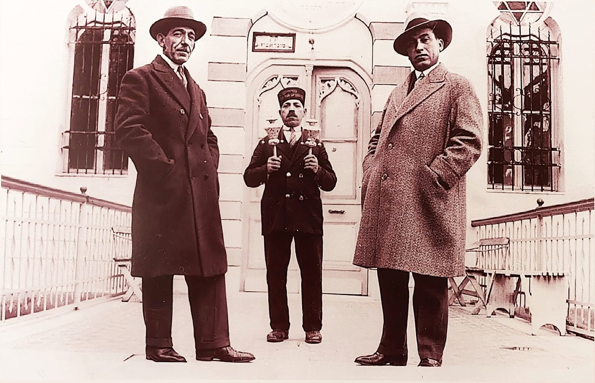
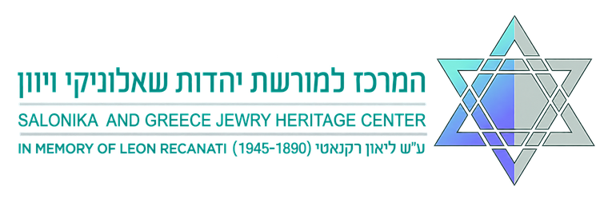
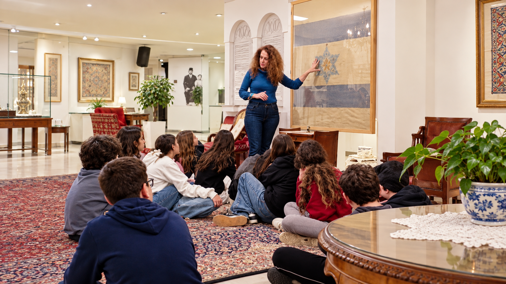
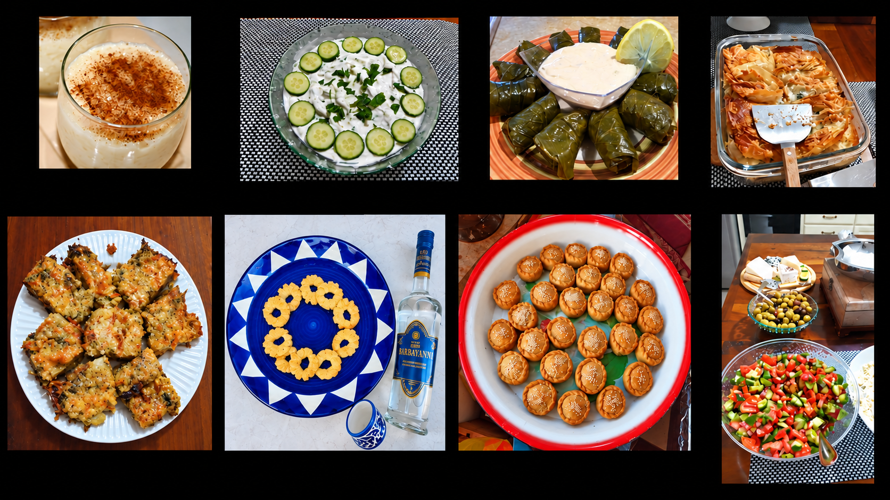
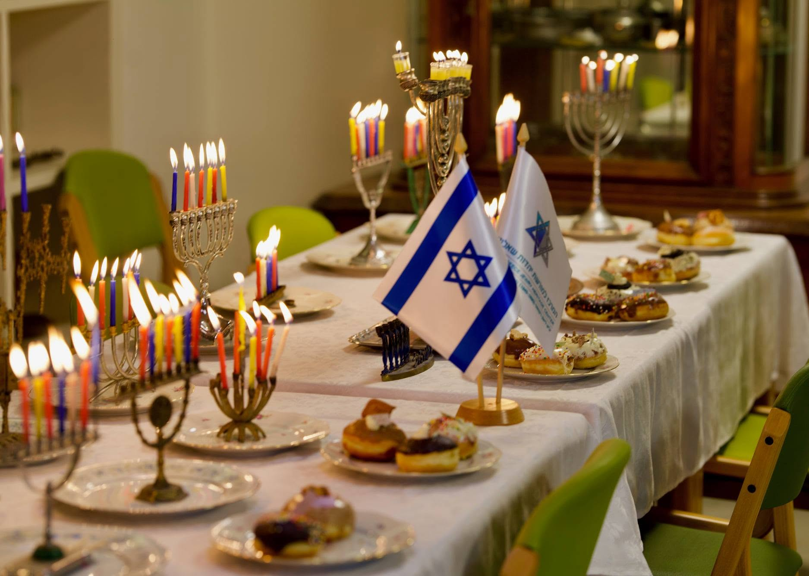
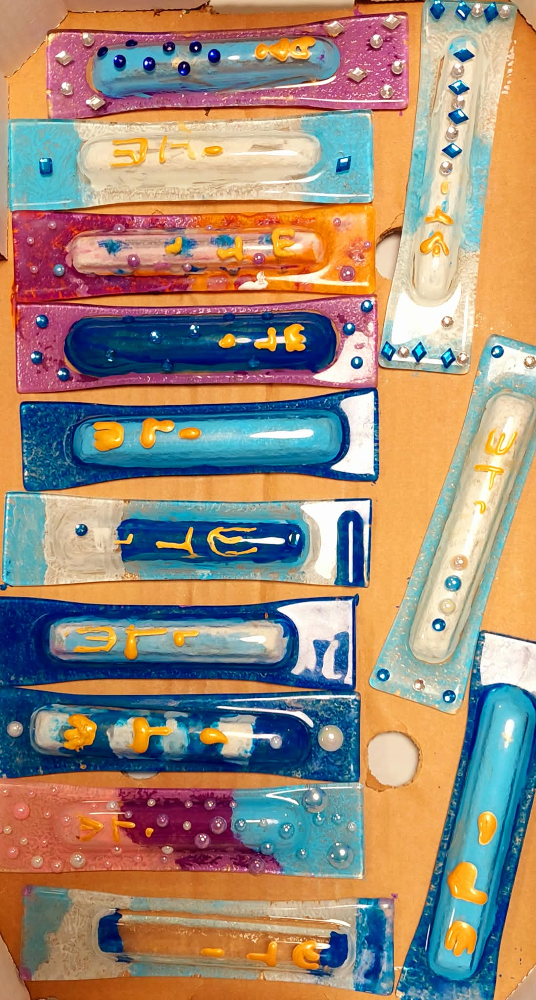
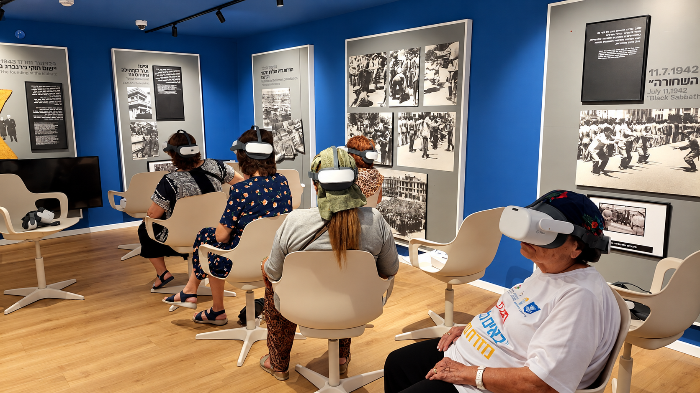
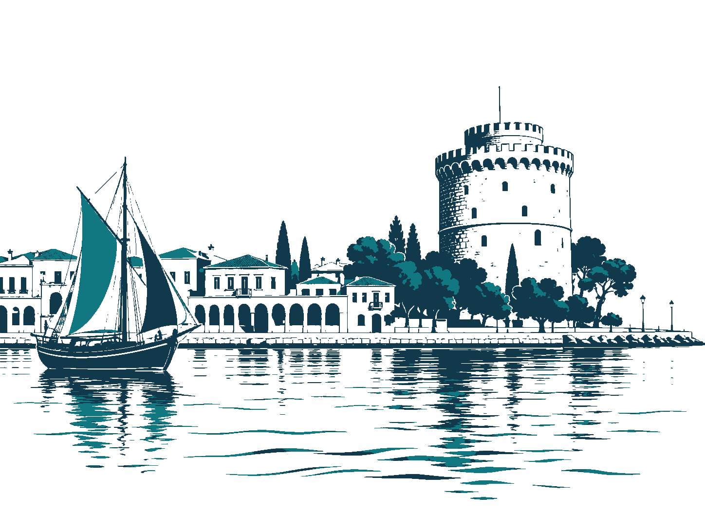

מאגרי מידע
ארכיונים, אוספים וספריות — שער אחד למורשת.

צור קשרקהילה בת יותר מאלפיים שנה
בין סיפורים וזיכרונות, צלילי לאדינו, טעמים של בית ומסורות שעברו מדור לדור מתעוררת לחיים מורשת יהדות שאלוניקי ויוון. המרכז ע״ש ליאון רקנאטי מזמין אתכם להיכנס לרגע אל עולם עשיר ומלא שמחת חיים, לפגוש את האנשים והתרבות שהיו ואינם, ולהתחבר לסיפור שממשיך לחיות בכולנו.

הסיפור שלנו
המרכז למורשת יהדות שאלוניקי ויוון ע״ש ליאון רקנאטי (1890–1945) פועל לשימור המורשת העשירה והייחודית של העיר ושל קהילות יוון, באמצעות מחקר, חינוך, תערוכות וחיבור לקהל הרחב.
לסיפור המלא של המרכזלגלות, ללמוד ולחוות את המורשת.

ארכיונים, אוספים וספריות — שער אחד למורשת.

פעילויות לבתי ספר, ימי עיון ופעילות לחיילים.


מפגשים וחוויות סביב התרבות והמורשת.

רגעים מהאירועים ומהמפגשים במרכז.

מה קורה במרכז
פעילות המרכז
מפגש עם הסיפורים, החפצים והאנשים שמרכיבים את עולמה של יהדות שאלוניקי.
לפרטים ולתיאוםפעילות המרכז
מנהגים, סיפורים וטעמים שעוברים מדור לדור ומחברים בין המשפחה לקהילה.
לפרטים ולתיאוםפעילות המרכז
מסע במציאות מדומה המחבר בין הזיכרון, סיפור הקהילה והחיים שנבנו מחדש.
לפרטים ולתיאוםציר זמן

בעקבות גירוש ספרד מגיעים לעיר יהודים ספרדים, ומביאים איתם שפה, ספרים ומסורות שיהפכו לחלק מחיי הקהילה.
שאלוניקי נודעת כעיר של ישיבות, דפוס עברי ופיוט – ירושלים של הבלקן.
השריפה הגדולה משנה את פני שאלוניקי. בשנים שלאחריה נבנים מחדש בתים ומוסדות, והקהילה מתארגנת לחיים בעיר המשתנה.
יהודי שאלוניקי מגורשים למחנות הנאציים ורוב בני הקהילה נספים. זכרם וסיפוריהם הם חלק בלתי נפרד מהמורשת שאנו נושאים.
עם תום המלחמה מתחיל שיקום החיים היהודיים ביוון. בשנים הבאות ניצולים רבים עולים לישראל, מקימים משפחות וממשיכים את מסורות הקהילה.
בית אבות ליאון רקנאטי מוקם בפתח תקווה עבור יוצאי יוון והבלקן. לימים יפעל במתחם גם המרכז למורשת.
המוזיאון היהודי של יוון מוקם באתונה. חפצים, מסמכים וזיכרונות מקהילות יוון נאספים ונשמרים למען הדורות הבאים.
המוזיאון היהודי בשאלוניקי פותח את שעריו, ומציג את תולדות הקהילה, תרבותה וחיי היומיום שלה בעיר.
המרכז למורשת יהדות שאלוניקי ויוון פועל כבית לסיפור הקהילות, לתיעוד ולהיכרות עם התרבות, השפה והמסורות.
סיורים, מפגשים, מוזיקה ופעילויות חינוך מחברים תלמידים, משפחות ובני הקהילה למורשת יהדות שאלוניקי ויוון.
מילים, קולות וזיכרונות
לקרוא, לצפות ולהאזין למורשת יהדות יוון.
למידע על אוסף הספרים והמחקרים
למידע נוסףגיליונות היסטוריים מהקהילה
למידע נוסףמוזיקה, פיוטים וקולות מן הבית
למידע נוסףהכותרות שסיפרו את חיי העיר
למידע נוסףתיעוד מצולם, עדויות וסיפורים
למידע נוסףמחקר, עיון ופרשנות מעמיקה
למידע נוסףמסמכים, מסורות וזיכרונות — הסיפור שנשמר לדורות.

לחצו על תחום לפתיחת הנושאים. לחיצה נוספת או כפתור הסגירה יסגרו אותו.
כלים למחקר ולגילוי
גישה ישירה לכלי המחקר, הספריות והמערכות הייחודיות של המרכז.
שאלוניקי הייתה ״עיר ואם בישראל״, עיר שבה נשמע קול התורה בכל פינה. לחובת הזיכרון שלה אנחנו מחויבים.מתוך עדויות בני הקהילה